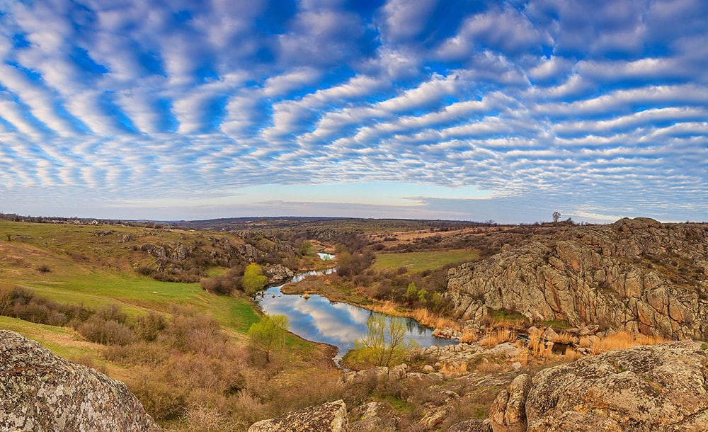
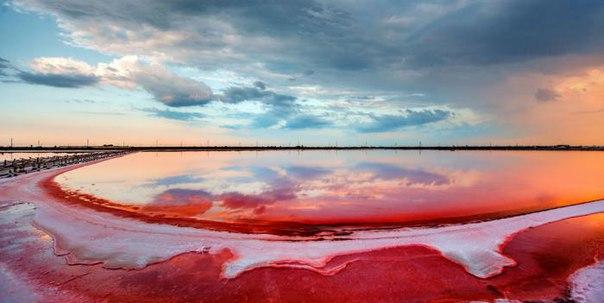
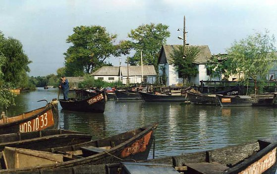
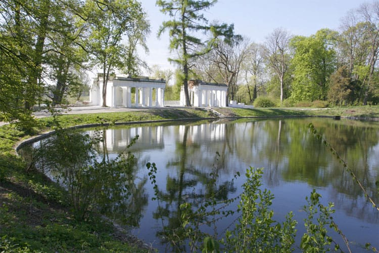
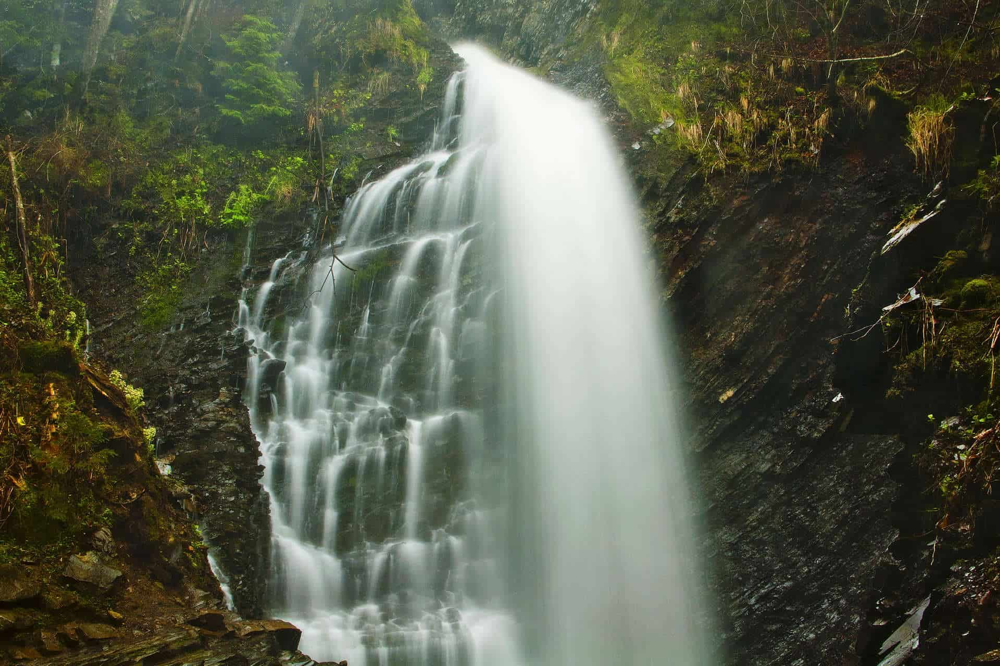
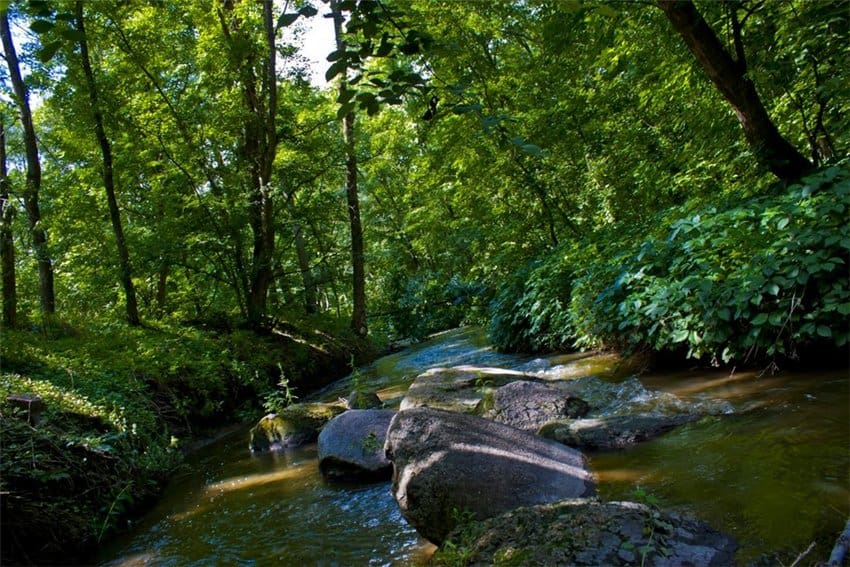

Туристичні місця України
Актовський каньйон

Каньйон знаходиться в Миколаївській області на річці Мертвовод. Чому варто відвідати це місце? Площа території складає 250 гектарів, а глибина 40-50 метрів, тому робити тут можна в прямому сенсі що завгодно. Потрібно відзначити, що Актовський каньйон – це унікальний симбіоз водної та лісової екосистем, які в сумі дають чисте повітря і мрійливий настрій. Ансамбль скель і гранітних валунів, які розташовані на території каньйону – унікальне місце у всій Європі. Це неймовірно красиво!Українське мертве море

В Україні є власне мертве море, розташоване поблизу Херсона. Там його називають лемурійське, адже вода в цьому озері забарвлена в рожевий колір. Та на цьому дива не закінчуються, адже ця вода вважається лікувальною і омолоджуючою. Найцікавіше те, що в нашому Лемурійському озері на 5% більше солі, ніж в мертвому морі!Вилкове

Вилково розташувався на воді, як справжня Венеція! За чудесами однозначно потрібно їхати сюди. Крім того, тут зливаються воєдино Дунай і Чорне море – видовище від якого неможливо відірватися. Це місце чуло тисячі зізнань у коханні Місто – мрія.Дендропарк Олександрія

Дендропарк Олександрія знаходиться в двох годинах від Києва – Білій Церкві. Парк заснувано за 11 років до народження Пушкіна – в далекому 1788. До речі, парк, знаменитий поет відвідував декілька разів! Можливо, так і з’явився «Євгеній Онєгін». У дендропарку знаходяться понад 5 тисяч старовинних і рідкісних рослин. Тут також є фонтани і водоспади, монументи і барельєфи, які створюють цілий комплекс естетичних картинок.Водоспад Гук

Водоспад Гук – найбільший водоспад в Карпатах, його ще називають Женецький. Висота Гука становить 15 метрів, що особливо помітно в літній час. Влітку в водоспаді можна купатися, оглядати околиці з оглядового майданчика і підніматися прямо до його підніжжя. Взимку тут теж є чим зайнятися: крижані каскади, утворені в результаті падіння води, переносять зі світу реального в задзеркаллі.Загадковий тунель любові

Трикратський ліс

Садиба Скаржинського – це історичне місце, яке варто відвідати любителям архітектури хоча б один раз. Маєток знаходиться в Миколаївській області в селі Трикрати. Головна місцева визначна пам’ятка – Трикратський ліс. Він представляє хитромудрий лабіринт на околиці села. Увагу туристів завжди привертає дуб любові – величезна рослина, схоже на серце, навколо якого в’ються багато історій і пліток.Подорожувати Україною – незабутньо і чудово, обов’язково робіть це частіше